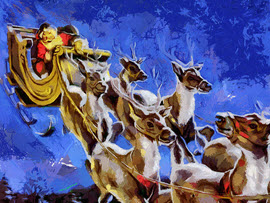
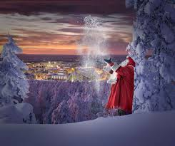

Kalėdiniai simboliai
Kalėdų senelis
Kalėdų senelis vilki raudonai baltais drabužiais, skrieja rogėmis, pakinkytomis 9 elniais. Kalėdų senelis gyvena Šiaurės Ašigalyje, Laplandijoje. Jis mėgsta pripildyti kojines smulkiomis dovanėlėmis ar padėti dovanų po eglute gruodžio 24 d. naktį. Į namus jis patenka pro kaminą arba orlaidę...
Kalėdinė eglutė
Eglutė Kalėdų šventei pasirinkta dėl to, kad tai visžalis medis, simbolizuojantis gyvybę ir amžino gyvenimo viltį. Kalėdų eglutės atneša į namus ne tik kalėdinę nuotaiką, bet ir malonų miško kvapą. Manoma, kad trikampė eglutės forma simbolizuoja Šv. Trejybę — Dievą Tėvą, Dievą Sūnų ir Dievą Šv. Dvasią.
Kalėdų senelis
Kalėdų senelis vilki raudonai baltais drabužiais, skrieja rogėmis, pakinkytomis 9 elniais. Kalėdų senelis gyvena Šiaurės Ašigalyje, Laplandijoje. Jis mėgsta pripildyti kojines smulkiomis dovanėlėmis ar padėti dovanų po eglute gruodžio 24 d. naktį. Į namus jis patenka pro kaminą arba orlaidę...